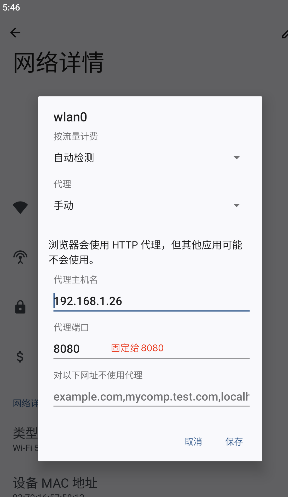

二十三、司小宝
一、目标
目的：手机号+密码 自动登录。
版本：司小宝v4.0.9
二、抓包
1、抓包方式
设置代理后，如果抓不到包，使用SocketDroid转发即可

2、分析
- 请求地址
https://vega.huoyunren.com/v2/isnb-openapi-proxy/auth/router
- 请求方式
POST
- 请求头
X-B3-TraceId:e0a82e5bee2945da9546e24c44f5756b # 可以删除不携带
- 请求体
mobile #加密，需要破解
password #加密，需要破解
equipment google #手机型号
- 请求参数
t:json
m:mobileinfo
f:driverLogin
accessid:br278dj # 固定，可以删除
g7timestamp:1694077461185
app:1
ua: android
appclientversion:4.0.9
referer:d507c00281c733bd693e5049ea33ad7e # 固定，可以删除
sign:RzHiBa7GIKSm2Zi8XtZMo43R+qg= # 也可以删除
- 通过Charles-compose后重新请求得到需要逆向的参数
mobile 和 password
sign
三、逆向sign
1、步骤
-
jadx 反编译，搜索-->因为sign和g7timestamp都在请求参数中，它比较特殊，我们搜索：g7timestamp
-
点击第二个进入，往下拉，可以看到sign的位置
sb.append("&sign=");
sb.append(new GatewaySign4Customer().a(EnvUtil.m37779d().f7738j, str2, valueOf, str));
- 查看 a
public class p0 {
public String a(String str, String str2, String str3, String str4) {
try {
return Uri.encode(new s0().a(str, str2 + "\n" + str3 + "\n/" + str4));
} catch (SignatureException unused) {
throw new RuntimeException("sign failed");
}
}
}
- 尝试hook--查看入参
hook到后发现4个参数和返回值
# 四个参数，第一个不变，第二个是post请求，第三个是时间戳，第四个是 inside.php
- hook到后发现4个参数和返回值
四个参数，第一个不变，第二个是post请求，第三个是时间戳，第四个是 inside.php
1KMrg0dfufc0wpnXEJacEQX1YEUYA0Ja POST 1694450485059 inside.php
5VnGRNih2xWwXIF3QeuAYdD7j%2F4%3D
- 继续查看：new s0().a
class s0 {
public String a(String str, String str2) throws SignatureException {
try {
SecretKeySpec secretKeySpec = new SecretKeySpec(str.getBytes(), "HmacSHA1");
Mac mac = Mac.getInstance("HmacSHA1");
mac.init(secretKeySpec);
return Base64.encodeToString(mac.doFinal(str2.getBytes("UTF-8")), 2);
} catch (Exception e2) {
throw new SignatureException("Failed to generate HMAC : " + e2.getMessage());
}
}
}
- 使用HmacSHA1加密，key是第一个参数，是刚刚我们hook到的第一个参数：
1KMrg0dfufc0wpnXEJacEQX1YEUYA0Ja


2、hook--p0--a方法查看入参
- hook--p0--a方法查看入参（失败）
```python import frida import sys
rdev = frida.get_remote_device() # app名字 session = rdev.attach("司小宝") scr = """ Java.perform(function () { var p0 = Java.use("cmt.chinaway.com.lite.q.p0"); p0.a.implementation = function (str, str2, str3,str4) { console.log("---------------------") console.log(str, str2, str3,str4); var res = this.a(str, str2, str3,str4); console.log(res); return res; }; });
""" ## 以下都是固定的 script = session.create_script(scr) def on_message(message, data): print(message, data) script.on("message", on_message) script.load() sys.stdin.read() ```
- 或者使用当前js进行hook
js hook 脚本
```js Java.perform(function () { var p0 = Java.use("cmt.chinaway.com.lite.q.p0"); p0.a.implementation = function (str, str2, str3,str4) { console.log("---------------------") console.log(str, str2, str3,str4); var res = this.a(str, str2, str3,str4); console.log(res); return res; }; });
# attach 方案执行：frida -UF -l 1-hook-p0-a.js # spawn 方案启动：frida -U -f cmt.chinaway.com.lite -l 1-hook-p0-a.js ```
- hook不到的一般原因
No frontmost application on Pixel 2 XL app没有启动的话
Failed to attach: process not found hook不到
3、回顾hook-车智赢
- 查看手机上正在运行的所有应用
frida-ps -U -a # 可以看到进程 但是看不到具体有哪几个(会有好几个进程)
- 找到车智赢的进程id
21678 车智赢+ com.che168.autotradercloud
- hook车智赢代码
import frida
import sys
# 连接手机设备
rdev = frida.get_remote_device()
session = rdev.attach(21678)
scr = """
Java.perform(function () {
// 包.类
var SecurityUtil = Java.use("com.autohome.ahkit.utils.SecurityUtil");
SecurityUtil.encodeMD5.implementation = function(str){
console.log("明文：",str);
var res = this.encodeMD5(str);
console.log("md5加密结果=",res);
return "305eb636-eb15-4e24-a29d-9fd60fbc91bf";
}
});
"""
script = session.create_script(scr)
def on_message(message, data):
print(message, data)
script.on("message", on_message)
script.load()
sys.stdin.read()
4、ptrace占坑
(1) ptrace说明
这是ptrace占坑的标志。
ptrace可以让一个进程监视和控制另一个进程的执行,并且修改被监视进程的内存、寄存器等,主要应用于调试器的断点调试、系统调用跟踪等。
在Android app保护中,ptrace被广泛用于反调试。一个进程只能被ptrace一次,如果先调用了ptrace方法,那就可以防止别人调试我们的程序。这就是传说中的先占坑。
一个进程只能被一个进程附加，为了防止frida的附加，程序中自己先基于ptrace附加自己，我们如果后期使用frida去附加app时，就会报错了。
frida内部会使用ptrace。
ps -A |grep lite
ps -e |grep lite

(2) 如何查看这个app，是不是被占坑了
- 查看手机正在运行的进程，【需要在手机上执行 adb shell 进入到手机】
ps -A |grep 车智赢包名
ps -A |grep autotradercloud # 只过滤车智赢的进程
- 查看司小宝进程
ps -A |grep lite # 只过司小宝的进程
忽略掉带 : 结果，如果发现有两条记录，咱们就可以断定它使用了ptrace占坑

查看车智赢的进行对比

- 查看当前手机正在运行的应用
正在运行的应用和正在运行的进程不是一个概念
-
手机端开启frida-server
-
在电脑上执行
frida-ps -U -a
-
可以看到 车智赢在运行 com.che168.autotradercloud
-
hook应用时候，可以用应用名字，也可以用应用进程id号、
session = rdev.attach('车智赢+') # 通过应用名称
session = rdev.attach(9894) # 进程id号
5、解决 ptrace占坑方式
- 方式一
注意：通过杀进程方案，导致真正的进程也会被关掉。如果是这种app，就没法用这种方式
司小宝：kill -9 ptrace占坑的进程 -9则为强制终止进程。
__skb_.. 打开司小宝发现只有一个主进程了,没有ptrace占坑进程了，hook就可以正常用。如果还不能使用，则换spawn的方案

- 方式二
开启app-->自动起一个进程--->占坑--->使用spawn方案hook--->让hook脚本早于它占坑的进程执行--->它占坑的进程就起不来 使用spawn方案就可以解决这个问题
- 方式三
后期学习 aosp刷机，修改aosp源码---》让app自己附加的进程都启动失败--》编译后刷入到手机中，就可以避免这个问题
6、解决ptrace占坑实现
- 方法1：速度快点让frida先附加(使用spawn方案运行)。
frida -U -f cmt.chinaway.com.lite -l 111.js
- 方法2：修改AOSP源码，让它自己附加自己失败，编译并刷入自己手机。
bionic/libc/bionic/ptrace.cpp
```c bool is_peek = (req == PTRACE_PEEKUSR || req == PTRACE_PEEKTEXT || req == PTRACE_PEEKDATA); long peek_result;
va_list args; va_start(args, req); pid_t pid = va_arg(args, pid_t); void addr = va_arg(args, void); void data; if (is_peek) { data = &peek_result; } else { data = va_arg(args, void); } va_end(args);
///ADD START int caller_uid=getuid();
//int caller_pid=getpid(); //caller_uid>10000说明是普通App调用 if(caller_uid>10000) {
if(req ==PTRACE_TRACEME)
{
//自己ptrace自己,直接返回成功
return 0;
}
if(req==PTRACE_ATTACH)
{
int caller_ppid=getppid();
if(caller_ppid==pid)
{
//如果是子进程ptrace父进程，直接返回成功
return 0;
}
//也可以通过读取/proc/$pid/status获取进程的uid
//如果uid和当前调用ptrace的uid一致，也直接返回成功
}
} ///ADD END long result = __ptrace(req, pid, addr, data); if (is_peek && result == 0) { return peek_result; } return result; } ```
hook成功
```js Java.perform(function () { var p0 = Java.use("cmt.chinaway.com.lite.q.p0"); p0.a.implementation = function (str, str2, str3,str4) { console.log("---------------------") console.log(str, str2, str3,str4); var res = this.a(str, str2, str3,str4); console.log(res); return res; }; });
// 使用spawn方案hook--- frida -U -f cmt.chinaway.com.lite -l 111.js
/* 四个参数，第一个不变，第二个是post请求，第三个是时间戳，第四个是 inside.php 1KMrg0dfufc0wpnXEJacEQX1YEUYA0Ja POST 1694450485059 inside.php 5VnGRNih2xWwXIF3QeuAYdD7j%2F4%3D
1KMrg0dfufc0wpnXEJacEQX1YEUYA0Ja POST 1694450485061 inside.php B6YjwYF02I2NsLEydxcwFJBemH0%3D
*/ ```
7、代码实现sign
import base64
import hashlib
import hmac
from urllib.parse import quote_plus
key = "1KMrg0dfufc0wpnXEJacEQX1YEUYA0Ja"
message = """POST
1694450485059
/inside.php"""
message = message.encode('utf-8') # 加密内容
key = key.encode('utf-8') # 加密的key
result = hmac.new(key, message, hashlib.sha1).digest()
print(result)
_sig = base64.b64encode(result).decode()
print(_sig)
result = quote_plus(_sig)
print(result)
注意：使用ps命令查看的 时候，要使用root权限
四、逆向手机号和密码(旧版本不能用了)
1、步骤
# 1 反编译，搜索 "password"
# 2 查看跟 LoginResponseEntity 相关，进入，发现使用了retrofit2发送请求
# 3 查找用例，虽然有好几个，但是第二个参数，也就是password都是用 n1.a(obj)
# 4 我们直接hook n1的a方法-->发现位置正确
# 5 我们查看n1的a方法---》使用rsa加密后，用base64编码，调用c方法
# 公钥是调用b()得到的
public static String a(String str) throws Exception {
byte[] doFinal;
byte[] bytes = str.getBytes("utf-8");
PublicKey b = b();
Cipher cipher = Cipher.getInstance("RSA/ECB/PKCS1Padding");
cipher.init(1, b);
int length = bytes.length;
ByteArrayOutputStream byteArrayOutputStream = new ByteArrayOutputStream();
int i = 0;
int i2 = 0;
while (true) {
int i3 = length - i;
if (i3 > 0) {
if (i3 > 117) {
doFinal = cipher.doFinal(bytes, i, 117);
} else {
doFinal = cipher.doFinal(bytes, i, i3);
}
byteArrayOutputStream.write(doFinal, 0, doFinal.length);
i2++;
i = i2 * 117;
} else {
byte[] byteArray = byteArrayOutputStream.toByteArray();
byteArrayOutputStream.close();
return c(Base64.encodeToString(byteArray, 0).replace("\n", ""));
}
}
}
# 6 我们查看c方法--》把传入的字符串做与运算后右移
private static String c(String str) {
byte[] bytes;
char[] charArray = "0123456789ABCDEF".toCharArray();
StringBuilder sb = new StringBuilder("");
for (byte b : str.getBytes()) {
sb.append(charArray[(b & 240) >> 4]);
sb.append(charArray[b & 15]);
}
return sb.toString().trim();
}
# 7 我们使用python复现


2、hook-n1-a方法
function hook_RegisterNatives() {
Java.perform(function () {
var n1 = Java.use("cmt.chinaway.com.lite.q.n1");
n1.a.implementation = function (str) {
console.log("---------------------")
console.log(str);
var res = this.a(str);
console.log(res);
return res;
};
});
}
setImmediate(hook_RegisterNatives);
// frida -U -f cmt.chinaway.com.lite -l hook_pass.js
结果
18953675221
4F36736A636C594F7355542F746235696C4D6562385741327366615A69794A306973304274476730303034373774543453385533676C47784579594E7237413046636A6662494C675A37464B5649304D6948
3747666F326B736D422F34394144554A505037764775674F74775836323074774F78314249613055423568496A61745A4368686F736D534B6864506559784F4B372B4D596F7A78654D6E4C52574263695335467554614B6A493D
---------------------
lqz12345
6C357A49494A4E5746724136356537585856464D3050716B4B6651514A513476726C53416447455050617A4D58624368765756634345733046535079787A49455342686F346A4A4258572B6F2F73514F556D
7377635374614E6F6A7639304F393256372F7836534B554F745A6278547171304B51782F31645A4B5A42316E2B746757496473356B4945516F3867366A304A6D464166394C325751424E6D687A397745795235555565564C673D
3、用户名和密码加密方式
from Crypto.PublicKey import RSA
from Crypto.Util.Padding import pad
from Crypto.Cipher import PKCS1_v1_5, AES
from base64 import b64encode
def c(data_text):
array = "0123456789ABCDEF"
data_list = []
for b in data_text.encode('utf-8'):
data_list.append(array[(b & 240) >> 4])
data_list.append(array[b & 15])
return "".join(data_list)
data = "18953675221"
rsa_pub_key = """-----BEGIN PUBLIC KEY-----
MIGfMA0GCSqGSIb3DQEBAQUAA4GNADCBiQKBgQCsAwGz+E7PEppCUWrM46wf9Sj2Zv+dlSIjwGtMoG9iG36HFYy0BC+uAgNDun0joo4UFW0qejyc2ExjFXBRiYENnseY3jb9qI0c3thAj2qd5iofGCWaRO1DA707xwD7MOjvHur7c7nvBNv+vwWFvMDiZzj4JqaaV8ZNTT2oO9+aJQIDAQAB
-----END PUBLIC KEY-----"""
key = RSA.importKey(rsa_pub_key)
cipher = PKCS1_v1_5.new(key)
encrypt_bytes = cipher.encrypt(data.encode('utf-8'))
cipher_text = b64encode(encrypt_bytes).decode('utf-8')
cipher_text = cipher_text.replace(r"\n", "")
result = c(cipher_text)
print(result)
4、代码整合
import time
import requests
import base64
import hashlib
import hmac
from urllib.parse import quote_plus
from Crypto.PublicKey import RSA
from Crypto.Util.Padding import pad
from Crypto.Cipher import PKCS1_v1_5, AES
from base64 import b64encode
def sign(g7timestamp):
key = "1KMrg0dfufc0wpnXEJacEQX1YEUYA0Ja"
message = """POST
{}
/inside.php""".format(g7timestamp)
message = message.encode('utf-8')
key = key.encode('utf-8')
result = hmac.new(key, message, hashlib.sha1).digest()
_sig = base64.b64encode(result).decode()
return quote_plus(_sig)
def encrypt(data_string):
def c(data_text):
array = "0123456789ABCDEF"
data_list = []
for b in data_text.encode('utf-8'):
data_list.append(array[(b & 240) >> 4])
data_list.append(array[b & 15])
return "".join(data_list)
rsa_pub_key = """-----BEGIN PUBLIC KEY-----
MIGfMA0GCSqGSIb3DQEBAQUAA4GNADCBiQKBgQCsAwGz+E7PEppCUWrM46wf9Sj2Zv+dlSIjwGtMoG9iG36HFYy0BC+uAgNDun0joo4UFW0qejyc2ExjFXBRiYENnseY3jb9qI0c3thAj2qd5iofGCWaRO1DA707xwD7MOjvHur7c7nvBNv+vwWFvMDiZzj4JqaaV8ZNTT2oO9+aJQIDAQAB
-----END PUBLIC KEY-----"""
key = RSA.importKey(rsa_pub_key)
cipher = PKCS1_v1_5.new(key)
encrypt_bytes = cipher.encrypt(data_string.encode('utf-8'))
cipher_text = b64encode(encrypt_bytes).decode('utf-8')
cipher_text = cipher_text.replace(r"\n", "")
result = c(cipher_text)
return result
def run():
g7timestamp = str(int(time.time() * 1000))
mobile = "18953675221"
password = "lqz12345"
param_dict = {
"t": "json",
"m": "mobileinfo",
"f": "driverLogin",
"g7timestamp": g7timestamp,
"app": "1",
"ua": "android",
"appclientversion": "4.0.9",
"referer": "d507c00281c733bd693e5049ea33ad7e", # 固定的
"sign": sign(g7timestamp)
}
body_dict = {
"mobile": encrypt(mobile),
"password": encrypt(password),
"equipment": "google"
}
res = requests.post(
url="https://g7s.ucenter.huoyunren.com/inside.php",
params=param_dict,
data=body_dict,
verify=False
)
print(res.json())
if __name__ == '__main__':
run()
五、验证码登录
(1) 分析
# 请求地址
https://vega.huoyunren.com/v2/isnb-openapi-proxy/auth/router
# 请求方式
post
# 请求参数
method ntocc-contract.contract.loginOrRegisterByPhoneAndCode
accessid br278dj
g7timestamp 1717757672401
app 1
ua android
appclientversion 4.7.8
referer d507c00281c733bd693e5049ea33ad7e
sign eNCcXpqaziBlAOG1Igt4SEI8BWc=
# 请求体
phone 18953675221
captcha 6698
(2) 代码整合
import time
import requests
import hmac
import base64
from hashlib import sha1
def sign(g7timestamp):
try:
secret_key="1KMrg0dfufc0wpnXEJacEQX1YEUYA0Ja"
content=f"""POST\n{g7timestamp}\n/v2/isnb-openapi-proxy/auth/router"""
# 创建密钥
secret_key = secret_key.encode()
# 创建hmac对象，指定使用sha1算法
mac = hmac.new(secret_key, digestmod=sha1)
# 更新需要加密的消息
mac.update(content.encode('utf-8'))
# 生成HMAC并进行Base64编码
hmac_result = mac.digest()
base64_result = base64.b64encode(hmac_result)
# 返回Base64编码后的结果
return base64_result.decode()
except Exception as e:
raise Exception(f"Failed to generate HMAC : {e}")
def send_code(mobile,g7timestamp,sign):
param_dict = {
'method': 'ntocc-contract.contract.sendVerificationCode',
'phone': mobile,
'accessid': 'br278dj',
'g7timestamp': g7timestamp,
'app': '1',
'ua': 'android',
'appclientversion': '4.7.8',
'referer': 'd507c00281c733bd693e5049ea33ad7e',
'sign': sign
}
res = requests.post(
url="https://vega.huoyunren.com/v2/isnb-openapi-proxy/auth/router",
params=param_dict,
verify=False
)
print(res.url)
print(res.text)
def login(mobile,code,g7timestamp,sign):
param_dict = {
'method': 'ntocc-contract.contract.loginOrRegisterByPhoneAndCode',
'accessid': 'br278dj',
'g7timestamp': g7timestamp,
'app': '1',
'ua': 'android',
'appclientversion': '4.7.8',
'referer': 'd507c00281c733bd693e5049ea33ad7e',
'sign': sign
}
data={
'phone':mobile,
'captcha':code
}
res = requests.post(
url="https://vega.huoyunren.com/v2/isnb-openapi-proxy/auth/router",
params=param_dict,
data=data,
verify=False
)
print(res.url)
print(res.text)
if __name__ == '__main__':
mobile=input('输入手机号：')
g7timestamp = str(int(time.time() * 1000))
res=sign(g7timestamp)
print(res)
send_code(mobile,g7timestamp,res)
code=input('输入验证码')
g7timestamp = str(int(time.time() * 1000))
res=sign(g7timestamp)
print(res)
login(mobile,code,g7timestamp,res)
六、免费代理搭建
-
地址为：https://github.com/jhao104/proxy_pool
-
步骤（按照gitHub上的步骤来就可以）
-
拉取代码
-
pycharm打开
-
安装依赖
-
修改配置文件
-
setting.py 为项目配置文件
-
配置API服务
python HOST = "0.0.0.0" # IP PORT = 5000 # 监听端口 -
配置数据库
```python DB_CONN = 'redis://127.0.0.1:6379/0'
配置 ProxyFetcher
PROXY_FETCHER = [ "freeProxy01", # 这里是启用的代理抓取方法名，所有fetch方法位于fetcher/proxyFetcher.py "freeProxy02",
....
] ```
-
运行调度程序
-
启动调度程序
python proxyPool.py schedule
-
运行web服务
-
启动webApi服务
python proxyPool.py server

七、自定义代理工具mitmproxy
1、介绍
- 功能简介
实时拦截、修改 HTTP/HTTPS 请求和响应 可保存完整的 http 会话，方便后续分析和重放 支持反向代理模式将流量转发到指定服务器 支持用 Python 脚本对 HTTP 通信进行修改
- 官网
https://mitmproxy.org/
- mitmproxy跟charles区别
mitmproxy 就是用于 MITM 的 proxy，MITM 即中间人攻击（Man-in-the-middle attack）。用于中间人攻击的代理首先会向正常的代理一样转发请求，保障服务端与客户端的通信，其次，会适时的查、记录其截获的数据，或篡改数据，引发服务端或客户端特定的行为。
不同于 charles 抓包工具，mitmproxy 不仅可以截获请求帮助开发者查看、分析，更可以通过自定义脚本进行二次开发。举例来说，利用 charles 可以过滤出浏览器对某个特定 url 的请求，并查看、分析其数据，但实现不了高度定制化的需求，比如：“截获对浏览器对该 url 的请求，将返回内容置空，并将真实的返回内容存到某个数据库，出现异常时发出邮件通知”。而对于 mitmproxy，这样的需求可以通过载入自定义 python 脚本轻松实现。

2、安装
- 方式一
官网下载安装包，安装，一路下一步安装--》安装后安装路径自动加入环境变量
https://mitmproxy.org/
- 方式二 使用pip 安装
pip3 install mitmproxy


3、使用
-
安装后 系统将拥有 mitmproxy、mitmdump、mitmweb 三个命令，由于 mitmproxy 命令不支持在 windows 系统中运行
-
使用 mitmdump 测试一下安装是否成功
mitmdump --version
输出：
Mitmproxy: 10.0.0 binary
Python: 3.11.4
OpenSSL: OpenSSL 3.0.7 1 Nov 2022
Platform: Windows-10-10.0.22621-SP0
- 启动
mitmdump # 命令窗口启动
mitmweb # web页面启动
-
注意
-
分析请求包：推荐mitmweb
- 命令行：mitmdump + 代码
4、手机配置代理+证书（访问https）
- 访问 mitm.it
- 需要安装证书，使用mitmproxy证书 + move cert + 重启


5、手机配置代理

6、python+mitmproxy
- 基本使用
```python from mitmproxy import http
def request(flow: http.HTTPFlow): if 'login.ashx' in flow.request.path: # 如果当前地址在请求地址中则进行打印 print(type(flow.request)) # mitmproxy.http.Request print(flow.request.path) print(flow.request.query)
def response(flow: http.HTTPFlow): if 'login.ashx' in flow.request.path: # 如果当前地址在请求地址中则进行打印与篡改响应 print(type(flow.response)) # mitmproxy.http.Response print(flow.response.text) # 响应文本内容 print(flow.response.content) # 返回bytes print(flow.response.json()) # 响应json内容 # 篡改响应 flow.response.text = '''{"returncode": 2040007,"message": "哈哈哈"}'''
# mitmdump -s mitmproxy的使用.py # 显示详细的日志 # mitmdump -s mitmproxy的使用.py -q # 不输出日志 ```
注意：
在使用mitmdump -s v1.py 的时候，需要关闭mitmweb的执行，否则端口冲突
- 设置代理
```python from mitmproxy import http from mitmproxy.net.server_spec import ServerSpec import requests
def request(flow: http.HTTPFlow):
res = requests.get('http://192.168.1.12:5010/get/?type=http').json()
ip, port = res.get('proxy').split(':')
address = (ip, port)
print(address)
flow.server_conn.via = ServerSpec(("http", address))
def response(flow: http.HTTPFlow):
print(flow.response.content)
# mitmdump -s v1.py -q # mitmdump -p 8080 -s v1.py --set block_global=false --set upstream_cert=false --set connection_strategy=lazy -q ```